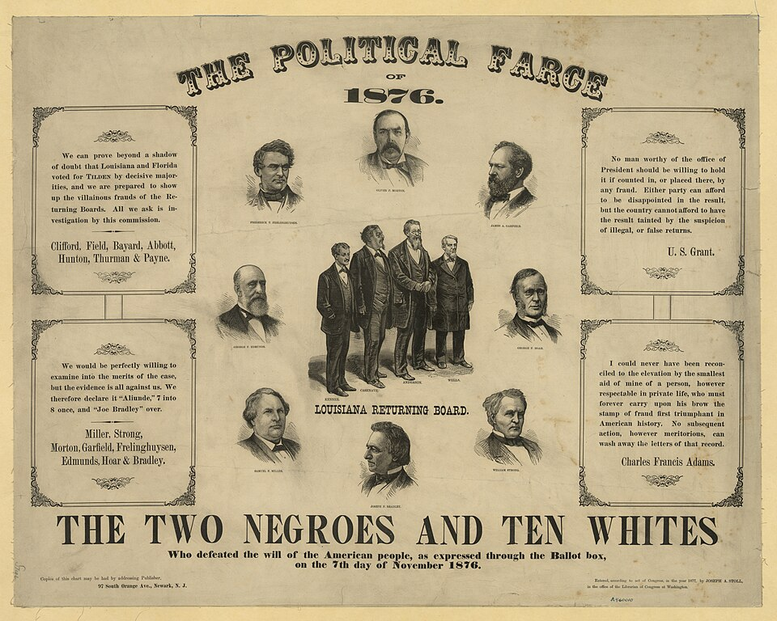

A42-POL-001 // HISTORICAL CLAIM REVIEW
The Disputed Election of 1876 and Compromise of 1877
Assessment: The election was decided through a partisan institutional process amid backroom negotiation, and political assurances likely accompanied the settlement.


The precise allegation
Republican Rutherford B. Hayes won the presidency after disputed returns in several Southern states were resolved by an electoral commission. The claim that party leaders secretly traded the presidency for an end to Reconstruction is plausible and supported by political circumstances, but no single signed bargain establishes an exact quid pro quo. The compromise's effects on Black civil rights were profound.
Chronology and political context
Democrat Samuel Tilden won the popular vote and appeared to have an electoral majority, but competing returns from Florida, Louisiana, and South Carolina and one elector in Oregon created a crisis. Congress formed a commission that awarded all disputed votes to Hayes. Negotiations preceded his inauguration; federal troops withdrew from the South soon after.
Primary historical record
Electoral certificates, congressional debates, commission proceedings, party correspondence, and contemporary newspapers document the contested returns and final resolution. The commission's partisan composition and close votes are clear. Private negotiations were informal and records incomplete, making the precise relationship between Hayes's victory and troop withdrawal difficult to establish.
Corroboration and contrary evidence
Historians broadly agree that political understandings facilitated a peaceful transfer and the end of federal intervention in the South. C. Vann Woodward's influential interpretation described a bargain; later scholarship notes that the withdrawal process had begun and no formal contract survives. The consequences for Reconstruction are clear even if the agreement's exact terms are not.
What remains uncertain
Whether Hayes personally authorized an explicit exchange, who represented him, and how much the troop withdrawal depended on a deal remain uncertain. The compromise was not one meeting with a complete record. Southern Democratic actions and national fatigue also shaped policy, so attributing the collapse of Reconstruction to a single bargain oversimplifies the process.
Calibrated verdict
The election was decided through a partisan institutional process amid backroom negotiation, and political assurances likely accompanied the settlement. A formal, explicit bargain is not conclusively documented. The practical retreat from Reconstruction followed and exposed Black southerners to escalating disfranchisement and violence, regardless of whether a signed quid pro quo existed.
What evidence could change this assessment
Newly discovered correspondence among Hayes's representatives, congressional leaders, and Southern Democrats could establish terms and authorization. Evidence of a specific troop-withdrawal promise tied to electoral votes would strengthen the bargain claim. A fuller record of state returns could also refine claims of fraud in the original counts.
Sources and source limits
- U.S. House of Representatives — Electoral Commission Act and 1876 election recordsCongressional historical account outlines the commission; introductory narrative does not settle the private-bargain debate.
- Hayes Presidential Library — 1876 election resourcesPresidential archive materials and biography provide primary context; collection reflects a single president's papers.
- C. Vann Woodward, Reunion and Reaction (Oxford University Press)Classic interpretation of the Compromise of 1877; later historians have revised aspects of its explicitness and causal weight.